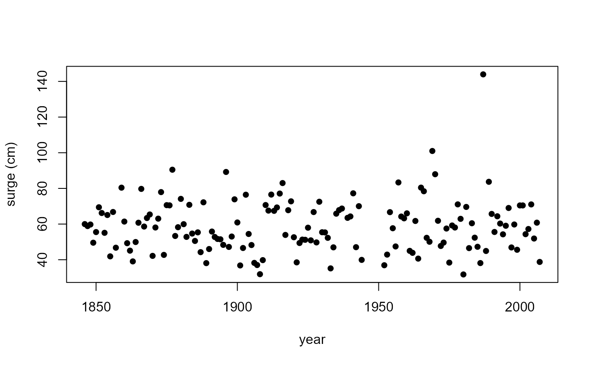
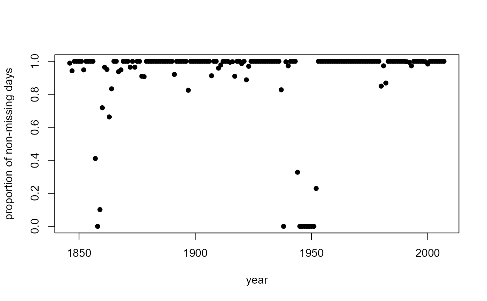
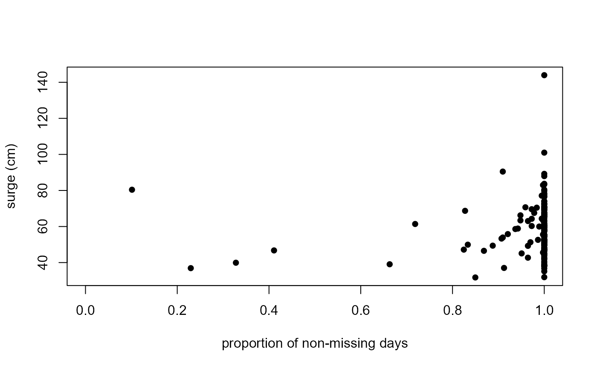

Annual maxima of sea surge heights near high tide at Brest tide gauge station (France) for the years 1846-2007 inclusive.
Format
BrestSurgeMaxima is a data frame with 162 rows (years 1846 to
2007) and the 4 variables:
maxima: annual maximum surge height at high tide in cm.notNA: the number of days of the year for which raw data were available.n: the number of days in the year (365 or 366).block: a block number of 1 for year 1846 through to 162 for year 2007.
The row names of BrestSurgeMaxima are the years 1946:2007.
Source
The dataset Brest in the Renext R package, specifically
Brest$OTdata and Brest$OTmissing. Originally, the source was
https://data.shom.fr/.
Note
The raw data are missing for approximately \(9\%\) of the days.
The data were declustered by the original providers in order to provide a
series of independent surge heights at high tide. Specifically, these
surge heights are separated by at least two days. A correction was applied
to account for trend in the sea-level over the observation period.
Although the declustering of the data means that the effective block size is
smaller than n, it may be reasonable to suppose that the proportion
notNA/n of non-missing values provides a useful measure of the extent to
which the size of an annual maximum is likely to be affected by missingness.
References
Deville Y. and Bardet L. (2023). Renext: Renewal Method for Extreme Values Extrapolation. R package version 3.1-4. doi:10.32614/CRAN.package.Renext
See also
BrestSurgeMissing: numbers of missing values in each month.BrestSurgeDays: Number of days per month in 1846-2007.
Examples
head(BrestSurgeMaxima)
#> maxima notNA n block
#> 1846 59.987 361 365 1
#> 1847 58.873 344 365 2
#> 1848 59.749 366 366 3
#> 1849 49.547 365 365 4
#> 1850 55.512 365 365 5
#> 1851 69.422 365 365 6
# Time series plot of annual maxima surges
plot(rownames(BrestSurgeMaxima), BrestSurgeMaxima$maxima,
ylab = "surge (cm)", xlab = "year", pch = 16)

# Time series plot of proportion of non-missing days
plot(rownames(BrestSurgeMaxima), BrestSurgeMaxima$notNA / BrestSurgeMaxima$n,
ylab = "proportion of non-missing days", xlab = "year", pch = 16)

# Plot surges against the proportion of non-missing days
plot(BrestSurgeMaxima$notNA / BrestSurgeMaxima$n, BrestSurgeMaxima$maxima,
ylab = "surge (cm)", xlab = "proportion of non-missing days", pch = 16)
